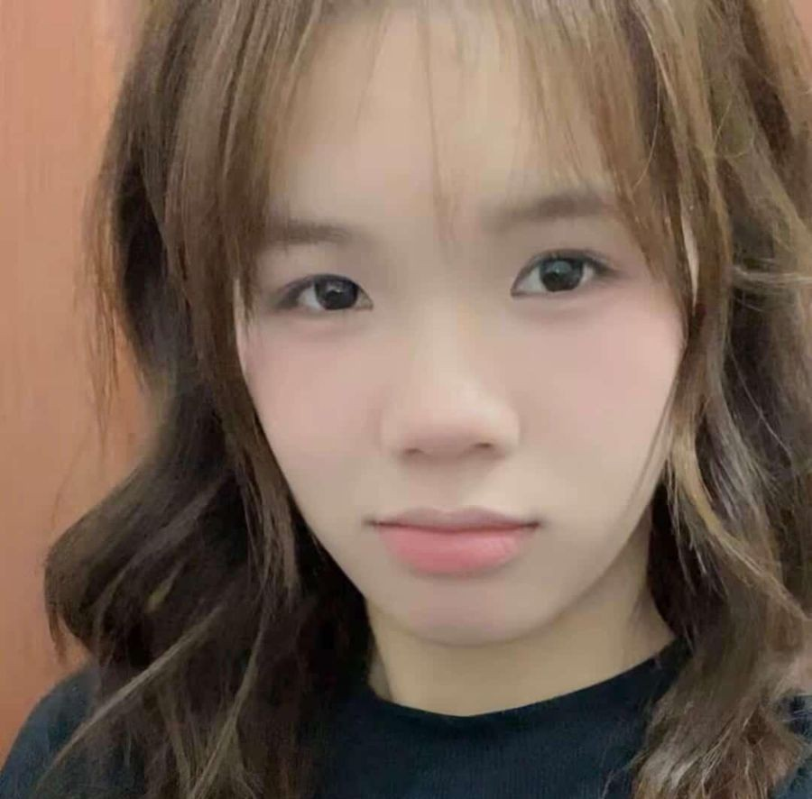
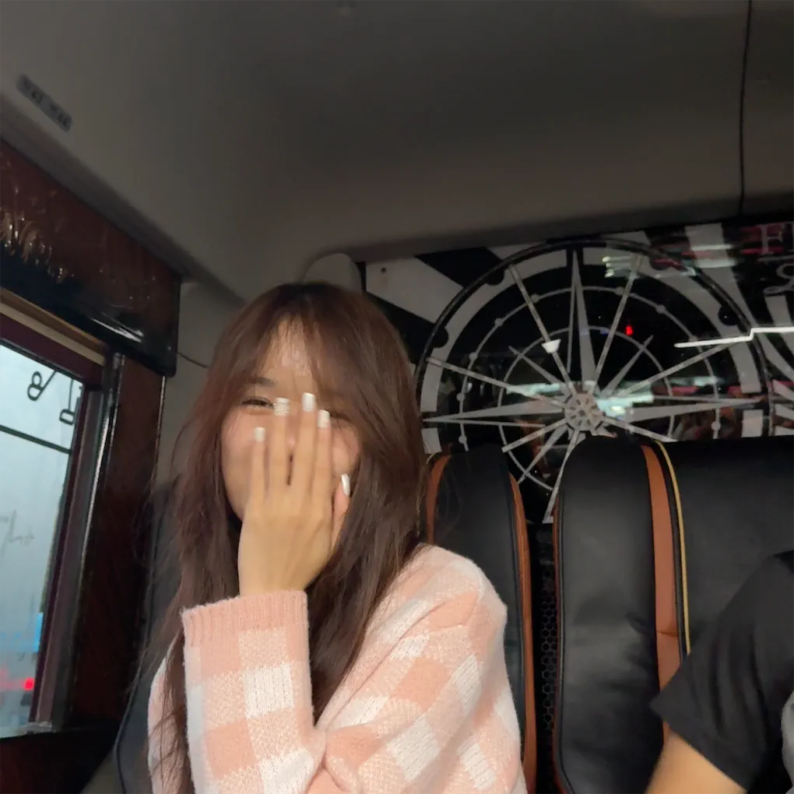
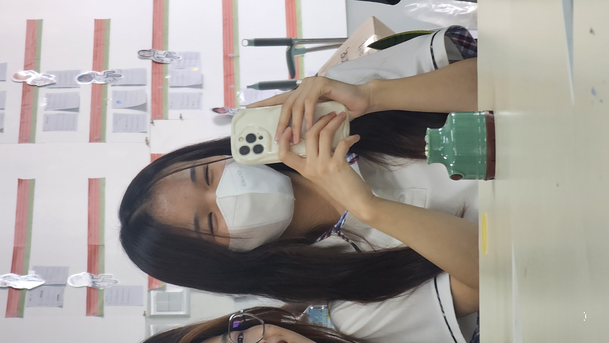

첫번쪠 먼저마음 준비해 편지 진짜 길어 진짜야 !
Dear THUONG,
Đây là lần đầu tiên mình làm điều gì đó như thế này nên mình hy vọng bạn sẽ không thấy ngượng hay khó hiểu… Mình đã cố tìm cách để làm bạn đoán xem mình chuẩn bị gì cho bạn hahaha… vì mấy thứ như thế này mình đã tốn khá nhiều thời gian để chuẩn bị 😭 bạn biết mà, mình không phải chuyên gia về code nhưng mình đã cố học một vài thứ cơ bản để hợp với sở thích của bạn. Thật sự mình cảm thấy nó rất xứng đáng hahaha… dù sao thì,
Trước hết, chúc mừng sinh nhật bạn, và chúc mừng bạn bước sang tuổi trưởng thành. Mình chỉ muốn nhắc bạn rằng có những người không thể sống đến tuổi 20, và việc bạn đang ở đây là một dấu hiệu cho thấy bạn là một người mạnh mẽ. Bước sang tuổi 20 không phải là điều dễ dàng. Bạn sẽ bắt đầu có những vấn đề riêng, áp lực riêng, cuộc sống riêng, và việc xây dựng tương lai là một giai đoạn rất quan trọng đối với bạn. Năm tháng đẹp nhất của bạn, và mình rất vui vì đã được ở bên bạn cho đến khi bạn tròn 20 tuổi. Chúng ta gặp nhau khi 17 tuổi, trở nên thân thiết khi 18, và giờ mình được chứng kiến bạn bước sang tuổi 20. Bạn đã đi được một chặng đường dài như vậy và mình tự hào về những gì bạn đã đạt được.
Thật ra mình đã có kế hoạch cho sinh nhật 20 tuổi của bạn từ năm ngoái, trước khi bạn mua vé về Việt Nam. Nhưng khi biết bạn sẽ đón sinh nhật ở Việt Nam, mình hơi khựng lại vì trong đầu mình đã lên kế hoạch rất nhiều. Nhưng có lẽ một số chuyện vốn dĩ phải như vậy. Đó là lý do mình cứ hỏi bạn về ngày bạn quay lại mà mọi thứ lại không khớp. Cuối cùng món quà duy nhất mình nghĩ ra chỉ là gửi cho bạn một ít tiền. Mình không biết bạn đã dùng nó như thế nào, hy vọng nó đã giúp ích cho bạn.
Vì hôm nay là sinh nhật bạn, mình hy vọng bạn sẽ tràn đầy kỷ niệm và niềm vui khi ở quê nhà, và hãy chắc chắn rằng bạn không hối tiếc bất cứ điều gì mình làm. Chúng ta không biết cuộc sống sẽ kết thúc khi nào, nên mình chỉ mong bạn được hạnh phúc. Mình chúc bạn giàu có, và mong bạn sẽ thực hiện được ước mơ của mình dù phải đối mặt với những thử thách phía trước, và đừng bao giờ bỏ cuộc với những điều bạn muốn làm. Như vậy không ngầu đâu. Bạn có tiềm năng nhưng bạn lại hay thờ ơ với nó, mình hy vọng bạn biết cách sử dụng nó.
Cuối cùng, bạn cũng đã dạy mình rất nhiều điều theo nhiều cách khác nhau. Có thể bạn không nhận ra, nhưng mình thực sự đã học được nhiều thứ khi ở bên bạn, không chỉ là những điều bên ngoài mà còn là cách yêu thương, cách kiên nhẫn và trách nhiệm. Điều này không có nghĩa là bạn là người xấu hay gì cả, chỉ là khi ở bên bạn mình nhận ra những thiếu sót của bản thân và mình quyết định học từ sai lầm của mình để không lặp lại nữa. Bạn là một người phụ nữ truyền cảm hứng và mạnh mẽ, vì vậy đừng đánh mất nụ cười rạng rỡ của mình trong tương lai.
Vì đây có thể thật sự là lá thư cuối cùng mình viết cho bạn nên mình sẽ đặt hết tâm tư vào đó nhé. Xin lỗi vì đã làm bạn thất vọng với một lá thư “ảo” như thế này và không thể viết tay cho bạn. Mình không biết vị trí của mình trong cuộc sống hay trong những ngày thường của bạn là gì, nhưng đối với mình, bạn sẽ luôn là một người quan trọng trong cuộc đời mình, và điều đó sẽ không thay đổi kể cả khi chúng ta phải rẽ sang những con đường khác nhau.
Thật lòng mà nói, mình chưa từng nghĩ mình có thể đi xa đến vậy, mình chưa từng đi xa như thế này trong đời. Mình đã lâu rồi không viết một đoạn dài như vậy nên hy vọng cảm xúc của mình được truyền tải rõ ràng qua lá thư này. Nếu có điều gì bạn không hiểu, hãy hỏi mình chứ đừng hỏi người khác, mình sẽ nhẹ nhàng giải thích đúng như những gì mình muốn nói. Mình không muốn ai hiểu lầm điều gì cả.
Mình đã thấy bạn vật lộn với cuộc sống và buồn bã, nhưng bạn luôn giấu cảm xúc của mình quá nhiều. Đôi khi có vẻ như bạn sẽ không nói với ai trừ khi đó là người rất thân thiết. Nhưng mình hy vọng bạn sẽ cẩn thận với việc chia sẻ, vì không phải ai cũng xứng đáng biết những điều bạn đã trải qua. Cuối cùng chúng ta cũng không biết họ sẽ dùng nó chống lại mình như thế nào.
Mình không biết cách viết thư khiến người ta khóc, nhưng mình biết cách đặt cả trái tim mình vào đó. Điều mình muốn nói là mình muốn cho bạn biết cảm xúc của mình dành cho bạn từ lúc bắt đầu đến bây giờ. Ban đầu chỉ là sự trùng hợp mà mình thích bạn, như mình đã nói, ngay cả bản thân mình cũng không biết mình thích bạn cho đến khi mình nhìn lại bản thân và sau một vài cuộc nói chuyện với Gugu, mình nhận ra mình thích bạn. Lúc đầu mình định không để lộ ra, nhưng càng ở bên bạn mình lại càng muốn làm những điều bốc đồng. Mình nhắn tin cho bạn mỗi ngày, muốn ở bên bạn, và tất nhiên bạn không phải người ngốc nên bạn đã nhận ra.
Thật ra mình đã nghĩ rằng nếu bạn hỏi thẳng thì mình sẽ nói dối rằng mình không có tình cảm, vì mình sợ… Sợ mọi thứ sẽ đi sai hướng… biết rằng bạn chưa từng thích con gái và cũng từng từ chối, mình thật sự rất sợ. Nhưng rồi mình không thể nói dối bạn khi bạn hỏi mình bắt đầu thích bạn từ khi nào. Mình thà mất lòng tự trọng còn hơn mất phẩm giá, nên mọi chuyện đã diễn ra như vậy. Và ngay cả sau khi mình tỏ tình, mình sống trong nỗi sợ mỗi ngày, thật sự là mỗi ngày, về việc bạn sẽ nghĩ gì về mình… Mình cảm thấy có lỗi vì mình thích bạn, vì điều đó có thể làm ảnh hưởng đến danh tiếng của bạn.
Có lần bạn nói ở công viên rằng bạn không thích những chuyện như thế này (con gái thích con gái), và bảo mình đừng suy nghĩ nhiều. Nhưng sự thật là sau khi bạn về nhà, mình đã đi bộ một mình và nước mắt rơi, tự trách bản thân vì đã làm mọi thứ trở nên phức tạp. Mình đã nghĩ cách để quên bạn. Mình không nói dối, có rất nhiều lần mình cố gắng buông bỏ, nhưng mình không làm được. Mỗi lần mình cố, mình lại càng thích bạn nhiều hơn.
Cuối cùng thì việc chúng ta là gì phụ thuộc vào bạn. Mình ổn với bất cứ điều gì, miễn là bạn đừng đối xử với mình như người xa lạ. Sau khi bạn liên tục nói mình đừng suy nghĩ về nó, mình lại làm điều ngược lại — suy nghĩ nhiều hơn. Mỗi đêm mình nghĩ cách tránh bạn, nhưng dù có tránh thì mình cũng không làm được quá một ngày. Trái tim mình không cho phép mình làm vậy, mình yếu đuối như thế đó. Nhưng thật ra không phải mình quyết định được, mọi thứ phải đến từ cả hai phía.
Dạo gần đây trong đầu mình trống rỗng, vì dù bạn có quay lại Hàn Quốc thì chúng ta cũng không thể gặp nhau. Mình phải đi học đại học mỗi ngày, mình sẽ bận rộn hơn và ít thời gian dành cho bạn hơn, nên mình lo cho tương lai của bạn. Mình hy vọng bạn lên kế hoạch cho nó thật tốt. Bạn chưa bao giờ nghe lời mình cả.
Mình cũng ổn nếu bạn gặp gỡ những người mới, nhưng hãy nói cho mình biết để mình không vượt quá giới hạn của mình. Bạn xứng đáng gặp một người tốt hơn. Mình hy vọng bạn đừng lãng phí năm tháng đẹp nhất của mình chỉ để làm việc hay kiếm tiền. Hãy lên kế hoạch thật tốt, và nếu bạn cần một bàn tay giúp đỡ thì bạn vẫn có mình, nên đừng lo phải cảm thấy cô đơn vì mình sẽ luôn ở bên bạn.
THÔI NÀO CÔ GÁI ƠI, BẠN CÓ THỂ ĐỌC NÓ BẤT CỨ LÚC NÀO BẠN MUỐN, HÔM NAY LÀ SINH NHẬT BẠN ĐÓOOO. LÀM BẤT CỨ ĐIỀU GÌ BẠN MUỐN. SỐNG HẾT MÌNH. CHÚC MỪNG SINH NHẬT CÔ GÁI XINH ĐẸP CỦA MÌNH, LET’S GOOO, ILYYY 💗
Xin lỗi vì đã bắt bạn phải đọc một lá thư dài như thế này. Mình đã định viết tay nhưng thư của mình lúc nào cũng rất dài và mình sợ có những lỗi nhỏ có thể gây hiểu lầm. :) CHÚC MỪNG SINH NHẬT CÔ GÁI LỚN CỦA MÌNH 💗
With love,
Parte